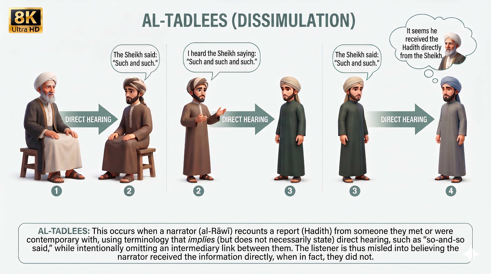

Tadlees is considered one of the most serious phenomena that hadith scholars paid close attention to, because it touches the very foundation of trust in the transmission of reports, and misleads the listener into believing there was a direct connection between the transmitter and the person he transmitted from, when the reality may be otherwise.
Later scholars summarized the concept of tadlees as: concealing the intermediary between a narrator and the person he narrates from, while using wording that implies direct connection, without stating the actual manner in which the report was received.
This is precisely what makes tadlees so dangerous: it usually does not alter the wording of the report itself, but rather alters the manner in which it was received. A listener may assume the transmitter received the report directly from its source, when in fact he obtained it through another person, through several intermediaries, or through an unknown route.
Tadlees may occur intentionally — out of a desire to conceal the intermediary or to make the chain appear stronger — or it may occur unintentionally, as a result of carelessness in transmission or reliance on ambiguous phrasing. However, judging the authenticity of a report does not depend on the transmitter's intention, but on establishing exactly how it was transmitted and received.
For this reason, tadlees can be likened to a slow poison; its effect does not appear at first glance, because the report may seem sound and convincing, while the flaw lies in the way it was received. When transparency about the source of information is lost, trust in it weakens, and errors or misconceptions can spread without people even noticing.
In its severity, tadlees can in fact be more dangerous than outright lying; a known liar's falsehood is recognized and his reports are avoided, whereas a person who practices tadlees may have his report accepted as authentic, and it is only uncovered through careful investigation and scrutiny — something very few people actually do.
The danger of tadlees is not confined to hadith transmission; it extends into everyday life as well. Reports are often relayed with phrases that imply certainty, such as "so-and-so said," or "I heard that...," or "the source is confirmed" — while the person relaying it did not actually hear it directly from the source, or relied on an unknown intermediary, or passed along an unverified rumor.
If you want to put your mind and heart at ease whenever you hear a report from anyone, whoever they may be, ask them: Did you hear it, or did you see it, yourself? If you apply this rule in your life, you will be surprised by how much inaccurate information you had been receiving and believing — simply because you trusted the speaker, while forgetting something more important than trusting the person: how did the information actually reach him?